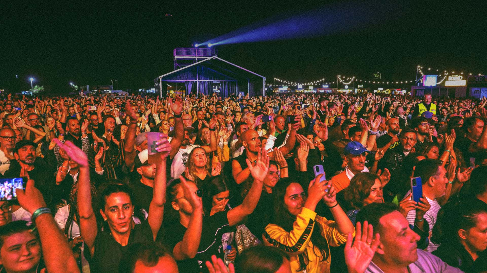

Festival Vilar de Mouros 2025

Sobre o Festival
Bem-vindo ao Festival Vilar de Mouros 2025! Este evento reúne artistas nacionais e internacionais e acontecerá de 10 a 12 de agosto. Venha viver momentos inesquecíveis com música, arte e muita energia!
Programação
21 de Agosto
Horário Artista/Grupo
17:00 FOGO FRIO 18:30 TIGERMAN 20:00 THE LEGENDARY 21:30 DELFINS - GNR 23:00 AMÁLIA HOJE
22 de Agosto
Horário Artista/Grupo
17:00 RAMP 18:30 MOONSPELL 20:00 SOULFLY 21:30 XUTOS & PONTAPÉ 23:00 THE CULT
23 de Agosto
Horário Artista/Grupo
17:00 SULFUR GIANT 18:30 CAPITÃO FAUSTO 20:00 CRYSTAL FIGHTERS 21:30 ORNATOS VIOLETA 23:00 DIE ANTWOORD
24 de Agosto
Horário Artista/Grupo
17:00 VAPORS OF MORPHINE 18:30 DAVID FONSECA 20:00 THE WATERBOYS 21:30 THE LIBERTINES 23:00 THE DARKNESS
Notícias
Novos artistas confirmados para 2025!
Não perca os workshops e as atividades interativas durante o festival.
Contactos: Email: info@vilardemouros.com | Telefone: 1234-5678
© 2025 Festival Vilar de Mouros. Todos os direitos reservados.